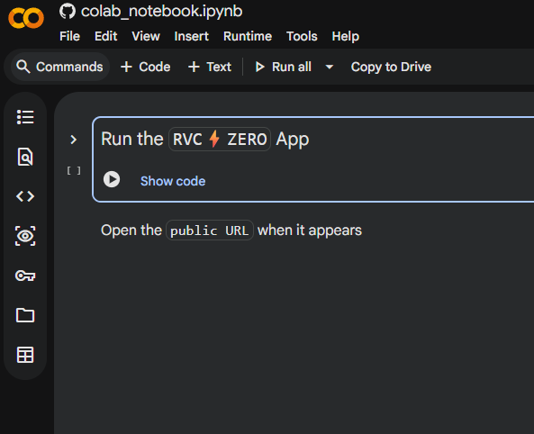
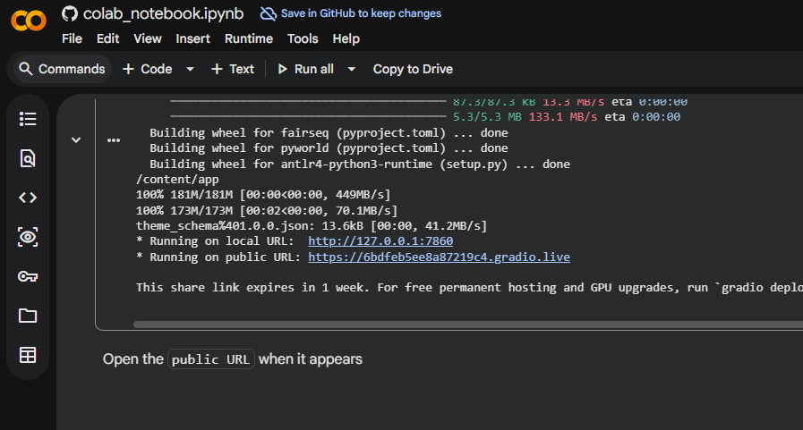
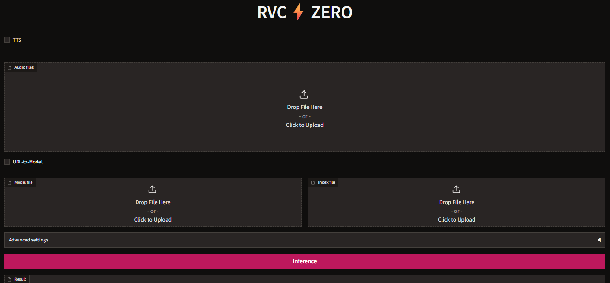
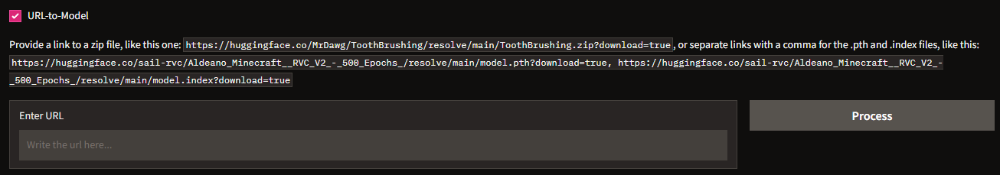
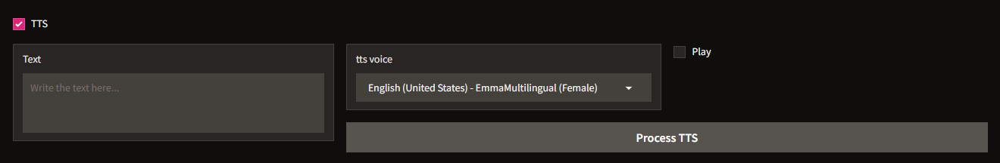
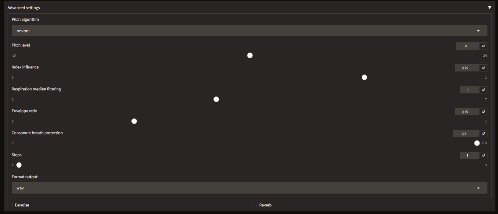

RVC Zero Cloud
Last update: March 24, 2026
Introduction
- This is a cloud-based tool to run RVC Inference directly in your browser without any local installation, maintained by r3gm.
Disclaimer
This demo is provided for educational and research purposes only. The authors and contributors do not endorse or encourage any misuse or unethical use of this software. Any use for purposes other than those intended is solely at the user's own risk.
Choose your Cloud Service
Set up the program using your preferred cloud service guide. Once configured, use the Public Tunnel URL to open the interface and continue with the next steps
ZeroGPU Space
Best for quick, no-install inference directly in your browser.
Google Colab
Reliable performance and full control for power users.
ZeroGPU HuggingFace Space
HuggingFace Space Service
Check the HuggingFace Space Glossary for more info on Free Tier, Limits, Quotas and other things.
RVC Zero HuggingFace Space Limits
- The RVC Zero HuggingFace Space is made only for Inference. Training is not supported.
- The Space runs on ZeroGPU. For the current GPU hardware used by ZeroGPU, check the ZeroGPU Technical Specifications.
RVC HuggingFace Spaces Pausing Issue
Please be aware that HuggingFace has recently been pausing RVC-related Spaces without providing any reason.
Accessing the Space
Open the space at https://huggingface.co/spaces/r3gm/rvc_zero.
Once you're in the space, the rest of the process is identical to what's described below in the
Google Colab
Google Colab Service
Check the Google Colab Glossary for more info on Free Tier, Limits, Verification, Pricing and other things.
Setting Up
1. Access the Colab notebook here and log in to your Google account.
2. Run the "Run the RVC ⚡ ZERO App" cell by clicking the play button on its left.

3. The installation will begin automatically. It will take approximately 7 minutes, wait for it to complete.

4. Once finished, a public URL will appear in the cell output. Click it to open the RVC Zero interface.
Don't close Google Colab until you're done using it, or the session will stop working.
Once you're in the interface, the rest of the process is identical to what's described below in the
Usage
Both the HuggingFace Space and the Google Colab version share the exact same RVC Zero web interface. The steps below apply to both.
Interface Overview
The space features a really clean, single-page layout:

TTS (toggle): Enable Text-to-Speech mode so you can generate audio directly from text instead of uploading a file.Audio files: Upload the vocal audio you want to convert.URL-to-Model (toggle): Load a model straight from a URL instead of uploading the.pthfile yourself.Model file: Upload your RVC model (.pthfile).Index file: Upload the matching.indexfile (this is optional, but we highly recommend it).Advanced settings: Expand this section to tweak things like pitch, index influence, and other fine-tuning parameters.Inference button: Click this to run the voice conversion!Result: Your final output audio will show up here once the conversion is all done.
Inference
Standard (File Upload) Method
a. Upload your audio: In the "Audio files" drop zone, simply drag and drop (or click to upload) the vocal audio you want to convert.
b. Upload your model: In the "Model file" drop zone, upload your .pth RVC model file. For the best accent accuracy, you can also upload the matching .index file in the "Index file" drop zone.
c. Run Inference: Click that pink Inference button. Once it finishes, your converted audio will appear right in the Result section. Just click the download icon to save it!
URL-to-Model Method
If you'd rather not upload a .pth model file manually, you can load a model directly from a URL. Just flip the URL-to-Model toggle on, and an input field will pop up.

The field accepts two URL formats:
A
.zipfile containing the model: paste the direct download link. For example:https://huggingface.co/MrDawg/ToothBrushing/resolve/main/ToothBrushing.zip?download=trueSeparate
.pthand.indexlinks separated by a comma. For example:https://huggingface.co/.../model.pth?download=true, https://huggingface.co/.../model.index?download=true
Once you've pasted the URL, click Process to download the model. Then upload your audio and click Inference as normal.
To get a direct HuggingFace download link, go to the model's Files and versions tab, right-click the download icon next to the file, and copy the link address.
TTS (Text-to-Speech) Method
If you don't have an audio file, you can generate one from text directly inside the space. Toggle TTS on at the top of the page and the TTS panel will expand.

a. In the Text field, write the text you want spoken.
b. In the tts voice dropdown, choose a voice. It's recommended to pick a voice that matches the gender and language of your RVC model for the best results.
c. (Optional) Enable Play to preview the raw TTS audio before it goes through RVC.
d. Click Process TTS. The generated audio will automatically be used as the input for RVC inference. No separate upload needed.
Then upload your model and click Inference as normal.
Advanced Settings
You can expand the Advanced settings menu in the interface to fine-tune your conversion. Here is a breakdown of what each setting does:

Pitch algorithm: The algorithm used to detect and shift the pitch.rmvpe+is our recommended default and usually gives the best results.Pitch level: Shifts the output pitch up or down in semitones:Lower value: deeper or more masculine voice.Higher value: higher or more feminine voice.Use 0: used if your model already matches the target pitch.
Index influence: Controls how much the.indexfile's accent is applied:Lower value: less accent and fewer artifacts.Higher value: brings out a stronger accent or character from the model, but it might introduce noise depending on your dataset's quality.
Respiration median filtering: This is a handy setting to help smooth out breathing and background noise artifacts in your output.Envelope ratio: Controls how much of the original audio's volume envelope blends with the converted voice. Higher values will preserve more of the original audio's natural dynamics.Consonant breath protection: Protects consonant sounds from getting over-processed during the conversion, which really helps keep the speech clear and understandable.
Troubleshooting
ZeroGPU Spaces have a maximum inference time limit for each request. If your audio is too long, the task might get aborted before it can finish. Try splitting your audio into shorter segments and converting them one by one.
ZeroGPU Spaces give out a specific usage quota per account. If you aren't logged in, your available quota is much lower. To fix this:
- Log in to your HuggingFace account to get a higher quota.
- Wait for your quota to reset. The error message will actually tell you how much time is remaining.
- Become a HuggingFace PRO Member to get 5× more quota!
You can check on your ZeroGPU quota right here.
Because ZeroGPU is shared across a lot of different Spaces, it might be temporarily unavailable during peak hours. Just give it a moment and try again!
There's an upload size limit for your model and audio files. If you run into this, try using a smaller model or compress your audio file before uploading it.
You have used up the GPU runtime provided by Colab. You will need to wait for it to reset or upgrade your plan.
- Report your issue here.